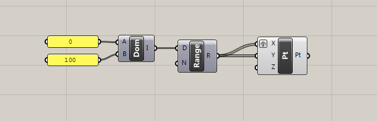
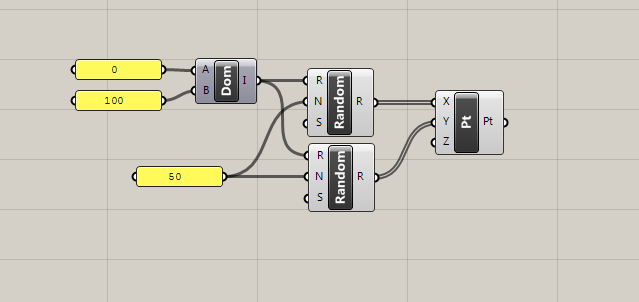
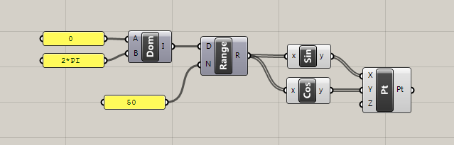
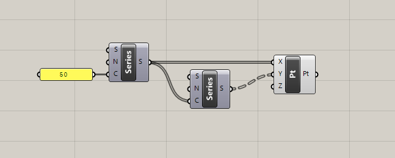
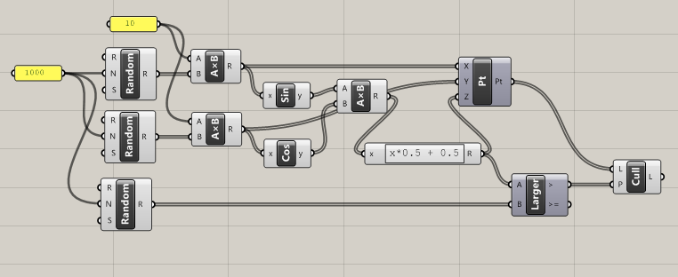
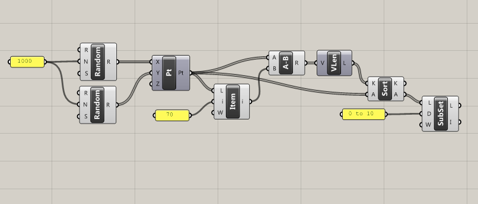
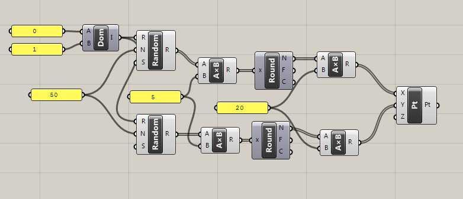

Всё большую популярность в среде архитекторов и дизайнеров приобретают системы визуального программирования. Берущие своё начало от языков моделирования потоков данных, визуальные блоки позволяют решать задачи в терминах устройств, непрерывно преобразующих поступающую информацию. Такой подход к программированию является доминирующим в системах цифровой обработки сигналов, физического моделирования, анимации, визуализации. Сегодня довольно сложно найти программу трёхмерного моделирования или анимации, которая не позволяла бы писать скрипты в виде графов. Но несмотря на популярность визуального программирования, давайте всё же рассмотрим возможности и ограничения, которые могут возникнуть в ходе решения задач.
Если бы я был разработчиком какой нибудь программы и мне пришлось выбирать средство, позволяющее пользователям автоматизировать сложные задачи, то десять лет назад, я не задумываясь бы выбрал визуальное программирование. Первым преимуществом является отсутствие накладных расходов связанных с языками программирования. В парсинге и компиляции нет необходимости, поскольку граф зависимостей уже построен самим пользователем. Такие концепции как полиморфизм даются практически бесплатно, компонент самостоятельно может выбирать обработчик в зависимости от типа входных данных. Легкая реализация кэша, посредством маркировки изменённого состояния объекта и дальнейшего распространения этого состояния ниже по течению, таким образом можно вычислять только изменившуюся часть графа. Удобный графический отладчик, во многих системах достаточно указать курсором на связь для отображения рассчитанных значений. Ввод и вывод можно осуществлять в любом месте алгоритма без встраивания каких либо дополнительных компонентов. Также, можно упомянуть отличное взаимодействие с системами реального времени, и всё это в рамках одной парадигмы.
Сегодня, я бы выбрал какой нибудь полноценный язык программирования, поверх всё того же ациклического графа. Во первых, стало проще найти быстрый встраиваемый язык, возможно даже компилируемый “на лету”. Во вторых, выражение таких механизмов как итерация и рекурсия через граф, требует введения циклических зависимостей, что значительно усложняет реализацию, особенно если граф является чисто геометрическим и не содержит событий или времени. Вообще, при моделировании сложных объектов, графическое представление алгоритма очень скоро превращается в знаменитое итальянское блюдо, разобраться в котором бывает очень трудно, особенно спустя некоторое время. Именно поэтому большинство популярных программ, в дополнение визуальному программированию, предлагают альтернативный скриптовый метод. Хотя в действительности проблему циклических зависимостей можно решить достаточно элегантно, позаимствовав lambda/map/reduce из функционального программирования, как это сделано в Autodesk Dynamo.
Но несмотря на богатый выбор инструментов для решения различных проблем, одна проблема остаётся нерешённой, это страх большинства творческих личностей перед языками программирования. Такой страх является результатом школьного преподавания методов оперирования структурами данных в отрыве от творческого акта. Программирование рассматривается, как работа с более продвинутым калькулятором, оптимизирующим ведение хозяйственной деятельности. А понимание анатомии и логики алгоритма заменяется неосмысленным заучиванием. В моей практике встречались дети, которые после замены имени переменной переставали понимать логику работы программы. Но несмотря на то, что специализированные высшие учебные заведения полностью форматируют школьные представления, архитекторы и дизайнеры, как правило, остаются с дефектным пониманием. В этой статье я хочу показать, сопоставляя фрагменты алгоритмов, что графическое представление практически не отличимо от текстового.
Любой язык программирования, впрочем как и естественный, впитывает моделируемую ситуацию, однако для осуществления связи между языком и интуитивным явлением необходима философия. Большинство людей не привыкли задумываться о том, что происходит на уровне интуиции, это отчасти объясняет то, почему мы имеем столько индивидуальностей и так мало уникального. Архитекторы и дизайнеры, напротив, в своём творческом процессе сильно ограничены природой и технологиями, что вынуждает их с особым вниманием относиться к каждому компоненту своей деятельности. Программирование позволяет детально рассмотреть процесс формирования идеи, а также найти такие пути её трансформации, которые иначе, оставались бы незамеченными в общем потоке неформального мышления. Надеюсь, приведённый здесь базовый словарь поможет переходу к более сложному программированию.

map(Iterators.product(0:100, 0:100)) do index
Point(index[1], index[2], 0)
end
rndgen() = rand(0:100, 50)
points = Point.(rndgen(), rndgen(), 0)
range = 0:2pi/50:2pi
points = Point.(sin(range), cos(range), 0)
points = map(1:50) do n
Point.(n, 1:n, 0)
end
x, y, w = rand.([1, 1, 1] * 1000) * 10
z = sin(x) * cos(y)
p = z > w
points = Point.(x[p], y[p], z[p])
points = reshape(rand(2000), (1000, 2))
distances = sqrt.(sum((points .- points[[rand(1:1000)],:]) .^ 2, dims=2))
sorted = sortslices([distances 1:1000], dims = 1, by = x->x[1])
selected = points[sorted[:,2]]
points = reshape(rand(100), (50, 2))
new_points = round.(points .* 5) .* 20